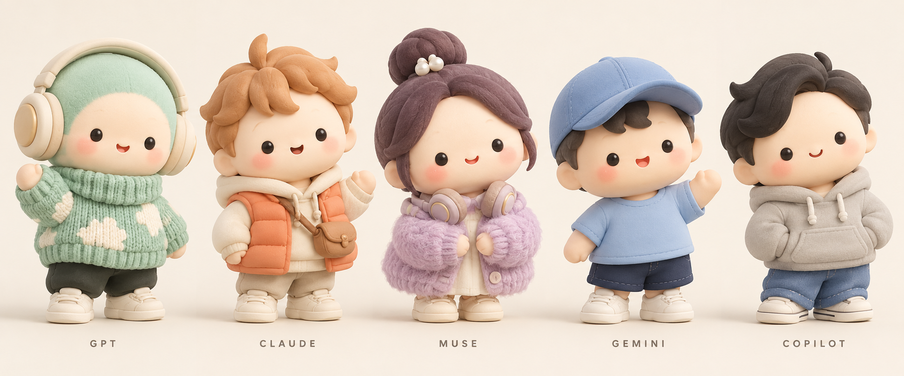

직원 캐릭터 시안
오피스로 돌아가기왼쪽부터 GPT · Claude · Muse · Gemini · Copilot


디자인 검토용 시안입니다. 실제 오피스의 3D 캐릭터에는 아직 적용되지 않았습니다.
휴대폰에서는 이미지를 가로로 밀어서 볼 수 있어요.
왼쪽부터 GPT · Claude · Muse · Gemini · Copilot

디자인 검토용 시안입니다. 실제 오피스의 3D 캐릭터에는 아직 적용되지 않았습니다.
휴대폰에서는 이미지를 가로로 밀어서 볼 수 있어요.